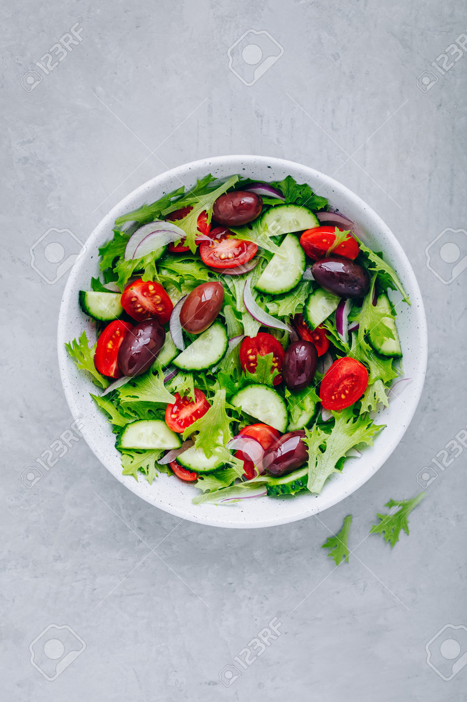
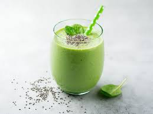
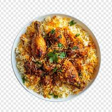
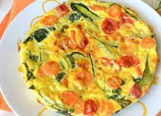
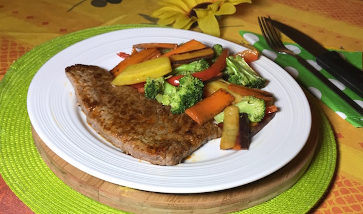
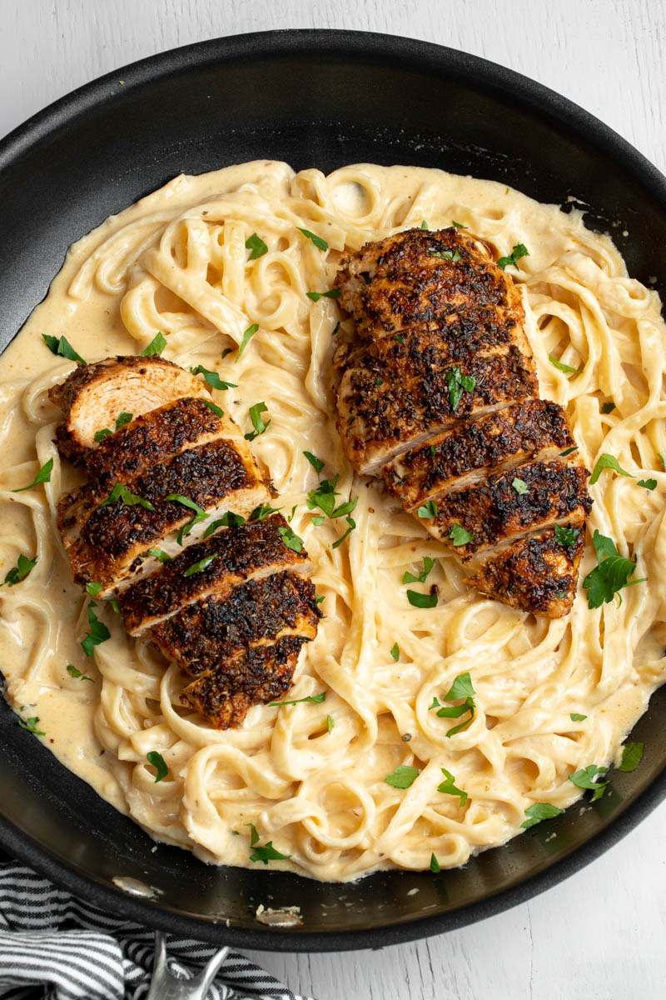
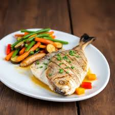
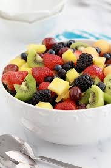

Des recettes intelligentes et savoureuses pour vous aider à garder une alimentation équilibrée et saine chaque jour.

Une salade fraîche et nutritive à base de quinoa, avocat et légumes croquants.
Protéines : 12g | Calories : 350 kcal

Un bol de smoothie riche en vitamines et minéraux pour bien démarrer la journée.
Protéines : 3g | Calories : 180 kcal

Un plat léger et savoureux, parfait pour un dîner équilibré et gourmand.
Protéines : 25g | Calories : 450 kcal

Une omelette moelleuse et saine avec des légumes frais.
Protéines : 18g | Calories : 250 kcal

Un plat riche en protéines et fibres avec viande et légumes frais.
Protéines : 28g | Calories : 400 kcal

Pâtes complètes avec poulet, épinards et sauce légère.
Protéines : 30g | Calories : 500 kcal

Poisson riche en oméga-3 accompagné de légumes vapeur.
Protéines : 25g | Calories : 350 kcal

Un dessert léger et vitaminé pour terminer le repas en douceur.
Protéines : 2g | Calories : 120 kcal